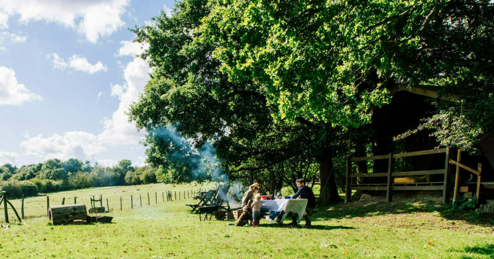

Explore the natural beauty of Ashkirk farms through our picturesque walking trails. Wander through rolling fields, peaceful woodlands, and along serene pathways that showcase the charm of the countryside. Whether you’re looking for a leisurely stroll or an invigorating hike, our trails offer something for everyone, with plenty of opportunities to spot wildlife, enjoy stunning views, and immerse yourself in nature. Along the way, you might pass grazing animals, blooming wildflowers, or simply enjoy the soothing sounds of the outdoors. A walk at Ashkirk farms is a refreshing escape and a perfect way to connect with the land.
